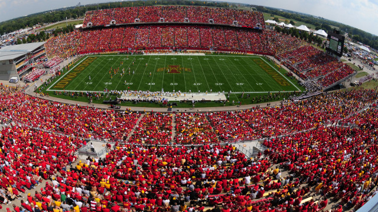
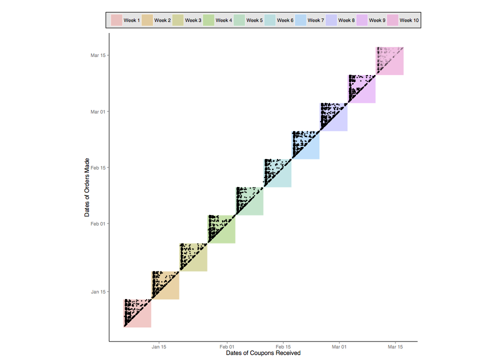
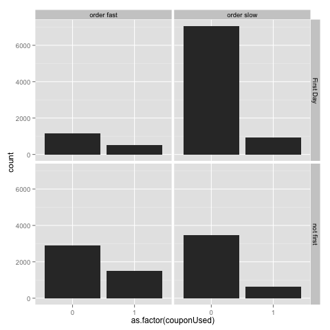
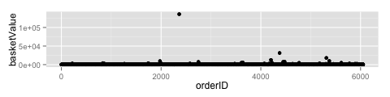
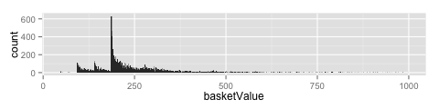

name: inverse layout: true class: center, middle, inverse --- # Our 2015 Data Mining Cup Solution ## Iowa State University Team 1 ### or ## How I Learned to Stop Worrying and Love the Grind .footnote[Our github page: [github.com/imouzon/dmc2015](https://github.com/imouzon/dmc2015)] --- #Iowa #Iowa State University ##and #Our Team --- layout: false .left-column[ ## Iowa ### Where is Iowa ] .right-column[ Because we know that this is an international audience, you might not all be familiar with the state of Iowa. <iframe width="600" height="450" frameborder="0" style="border:0" src="https://www.google.com/maps/embed/v1/directions?origin=Berlin%2C%20Germany&destination=Iowa%20State%20University%2C%20Ames%2C%20IA%2C%20United%20States&key=..."> </iframe> ] --- layout: false .left-column[ ## Iowa ### Where is Iowa ### About Iowa ] .right-column[ ## Iowa is in America's Midwest <center> <img src="www/figs/iowa-skyline.jpg" alt="dmc logo" height="185"> </center> - The largest city, Des Moines, only has a population of about 600,000 - The largest producer of corn, ethanol, and soybeans in the United States - There are more pigs than people in Iowa - It is named after the Iowa river which itself is named after the Native American "Ioway" tribe. - It is the birth place of the actor John Wayne (The Searchers, Red River, ...) ] --- layout: false .left-column[ ## Iowa ### Where is Iowa ### About Iowa ## Iowa State ### The Stats Dept ] .right-column[ <center> <h2> Iowa State Univeristy</h2>  </center> - First statistics course offered in 1915 - Department established in 1947 (the first statistics department in the US) - Snedecor Hall built in 1953 ] --- layout: false .left-column[ ## Iowa ### Where is Iowa ### About Iowa ## Iowa State ### The Stats Dept ## Our Team ] .right-column[ ## Our Team <center> </img> </center> ] --- name: inverse layout: true class: center, middle, inverse --- #Our Approach --- name: inverse layout: true class: center, middle, inverse --- #The First 10 Days --- layout: false .left-column[ ## First 10 Days ### Find Structure ] .right-column[ ##The Data Didn't Just Appear Randomly - There must be some **structure** underlying it - There must be some **unit** generating it in the context of the structure **Here's an analogy**: - The tracks the structure - The train is the unit, whose future position is uncertain but constrained by the tracks <center> <img src="http://33.media.tumblr.com/11db69e7cd1e1283dc195e8d60e443ec/tumblr_inline_nlkv5eNmcw1r4j8j1.gif" alt="buster" height=240></img> </center> ] --- .left-column[ ## First 10 Days ### Find Structure ] .right-column[ <center> ## Coupons Expire </img> </center> - Batches of coupons are sent every Monday at 11:59 p.m. - They keep the same coupons for one week - After that week has passed, they can not use the coupons anymore and instead have three new coupons. ] --- .left-column[ ## First 10 Days ### Find Structure ### Using structure ] .right-column[ ## The Structure Matters - We can examine how the customers (the units) behave in this structure of coupon delivery and expiration <center> </img> </center> - This structure is important - customers who receive coupons early and shop quickly are more likely to use them. ] --- name: lossfunc layout: true class: center, middle, lossfunc --- # Dealing with Loss <br><br> $$ E = \\sum\_\{i=1\}^\{n\}\\Biggl\[ \\left\(\\frac\{u\_\{i\} - \\widehat\{u\}\_\{i\}\}\{\\frac\{1\}\{n\}\\sum\_\{i=1\}^\{n\}u\_\{i\}\}\\right\)^\{2\} + \\left\(\\frac\{v\_\{i\} - \\widehat\{v\}\_\{i\}\}\{\\frac\{1\}\{n\}\\sum\_\{i=1\}^\{n\}v\_\{i\}\}\\right\)^\{2\} + \\left\(\\frac\{w\_\{i\} - \\widehat\{w\}\_\{i\}\}\{\\frac\{1\}\{n\}\\sum\_\{i=1\}^\{n\}w\_\{i\}\}\\right\)^\{2\} + \\left\(\\frac\{b\_\{i\} - \\widehat\{b\}\_\{i\}\}\{\\frac\{1\}\{n\}\\sum\_\{i=1\}^\{n\}b\_\{i\}\}\\right\)^\{2\} \\Biggr\] $$ --- layout: false .left-column[ ## First Steps ### Examine Error ] .right-column[ ### PROBLEM The basic piece of the loss function is $$ \\frac\{1\}\{\\bar\{x\}\} \\sum\_\{i=1\}^\{n\} \\left\(x\_\{i\} - \\widehat\{x\}\_\{i\}\\right\)^\{2\} $$ - We get punished for for missing in either direction - We get punished for more as the more we miss by - we get punished more if the mean response is low We have to predict the mean response too! Consider `basketValue`: <center> </img> </center> There are some enormous values in there - how should that impact our prediction? ] --- layout: false .left-column[ ## First Steps ### Examine Error ### Basket Error ] .right-column[ ## Error and `basketValue`: **Basket behavior** There are some extreme values, but most seem to be very close to 180: <center> </img> </center> **Possible Scenarios:** | | basketValue is huge| basketValue is NOT huge | |--------------------------|:-------------------:|:-----------------------:| | **Prediction is huge** | Small Error<br> Huge Mean | **Huge Error** <br> **Small Mean** | | **Predict is small** | Huge Error<br> Huge Mean | Small Error<br> Small Mean | - Obviously, we are never better off making incorrect predictions - *But* we could lose the entire competition just by making one mistake in basketValue ] --- name: inverse layout: true class: center, middle, inverse --- #Decision <br><br> ## Use exponential tools that restrict prediction size --- layout: true class: center, middle --- #We were off to a good start ## We had an good grasp of the data structure ## We had an intuitive feel for the loss function ## We had a lot of time left to find the important features --- name: inverse layout: true class: center, middle, inverse --- #And Then... --- layout: false <center> <img src="http://3.bp.blogspot.com/-u6MZBWbGcZI/UT4mft01YTI/AAAAAAAADpU/JubGsyGdL00/s1600/failure.png" alt="ChenPlot" height=220></img> </center> <center> #Nothing Else We Did Worked </center> <br> We had nothing working for us at all - attempts to create some kind of base monetary value of coupons failed - attempts to fit a statistical model to user behavior failed - attempts to use "oddities" in the data failed - Too many categorical <center> #There was just no clever way to unlock the data </center> --- name: inverse layout: true class: center, middle, inverse --- #We just had to work a little harder --- #Good general methods Instead of trying to find more and better data specific features, we created good general features - LLR: used to examine likelihood a coupon is used when examined through different categories - tf-idf: Used to measure how similar a trio of coupons were to each other # New features means new data divisions - Historical data sets can be used to provide background data for features without biasing the predictions --- # Now features can be generated with ease - LLRs on reward, user, ... - LLRs on rewardXuser, ... - LLRs on rewardXuserXbrand, ... # Data Explosion! Thousands of features --- # Reduce features by selection - Pete - lasso and crf to reduce number of features # Data Explosion! Thousands of features - list of techinques for reduction --- # Data Explosion! Thousands of features - Hundreds of features based on LLRs and tf-idf - Most features are only weakly related to response - Needed an easy way to select strongest features. --- # Feature Selection: Iteratively run on subsets of data: - random forest - C5.0 - adaboost - lasso --- # Feature Selection: Once we had applied these general methods we had another problem: almost 1000 columns in feature matrix. - 305 from random forest - 70 most important C5.0 - 38 from lasso --- # Reduce features by selection - Pete - lasso and crf to reduce number of features ---